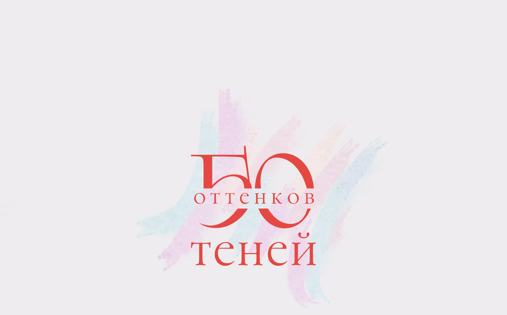
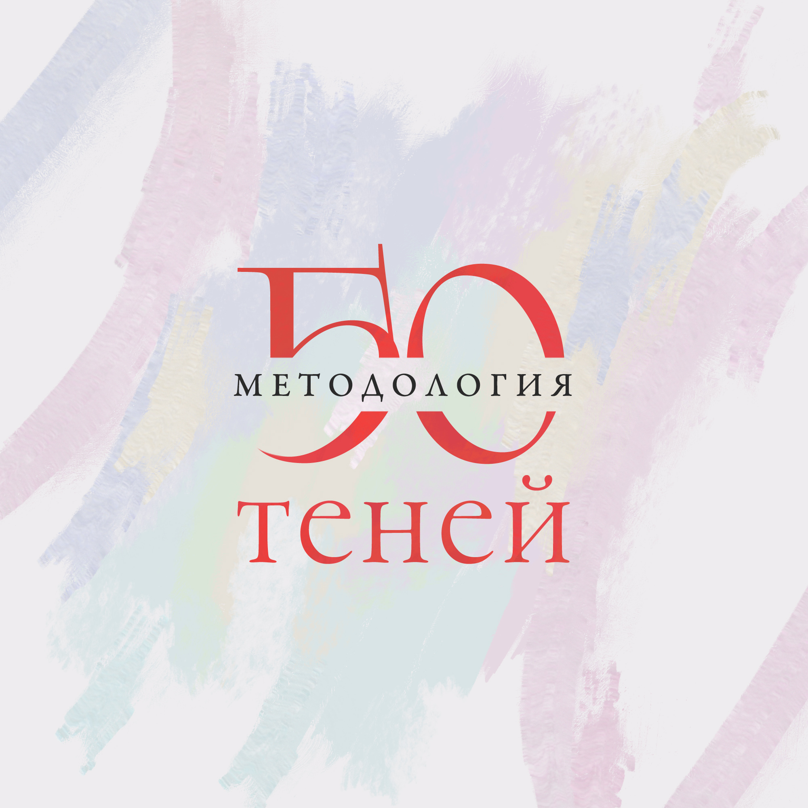
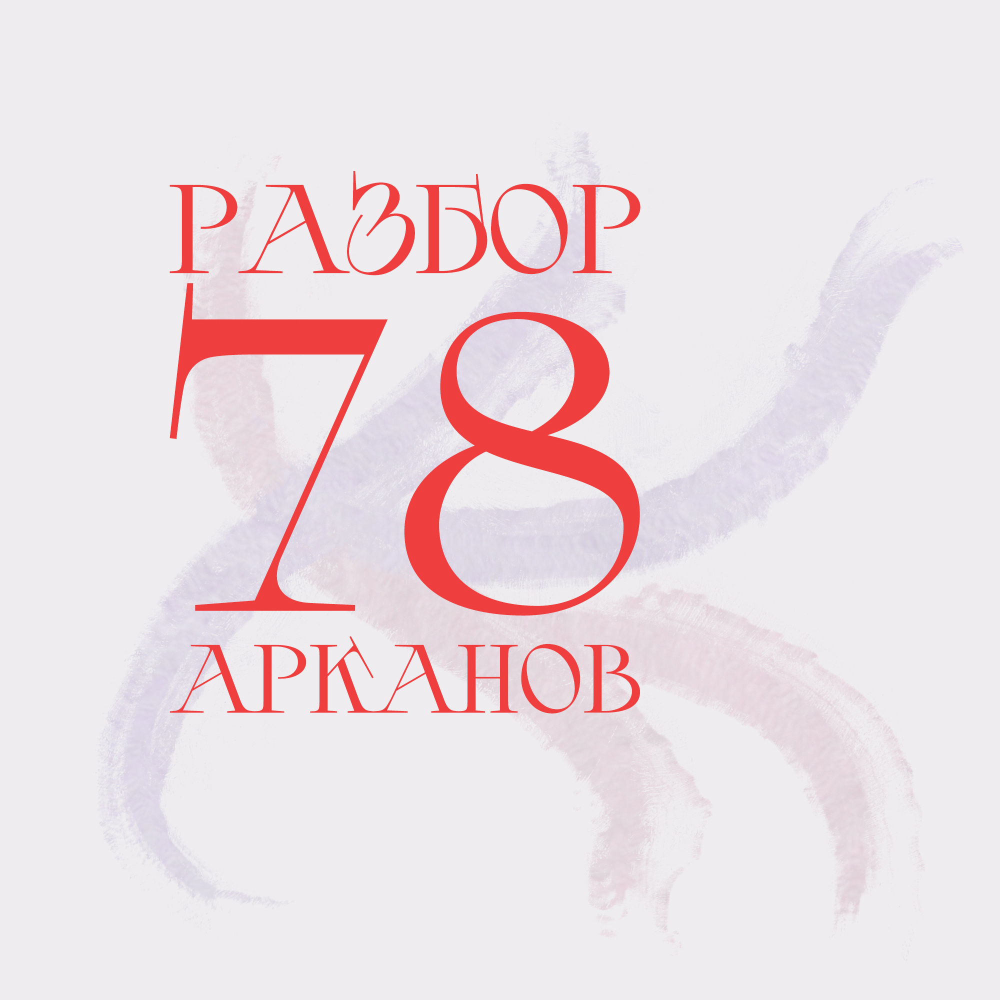
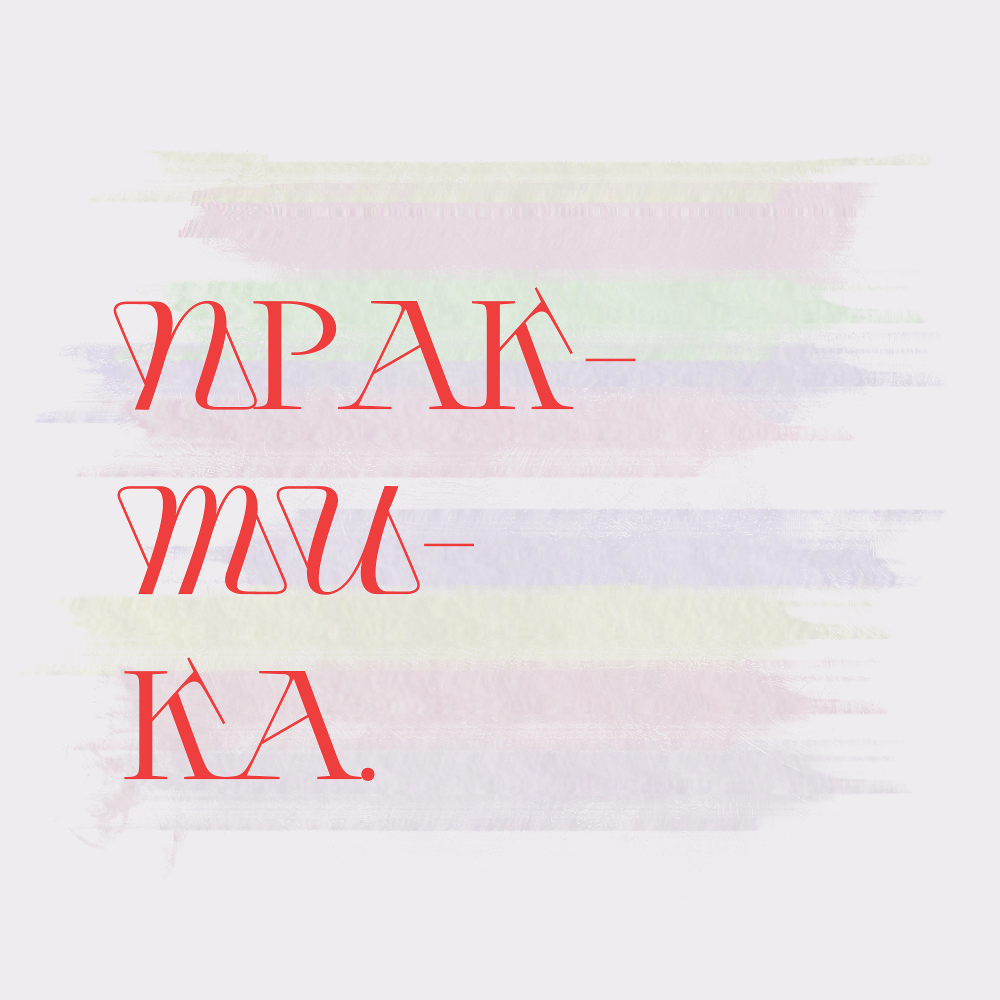

Таро Теней Веры Скляровой - одна из самых магических колод Таро на рынке. Демоны, договоры, черная магия, привороты, планетарные духи. Это колода, которая построена на эзотерическом мировоззрении и до сих пор читается в этом ключе.
Но если на секунду отбросить демонов и договоры, логично задать один вопрос: а как вообще работает Таро с точки зрения психологии, а не шизотерики? Почему расклад "попадает"? Что происходит между клиентом, тарологом и картой? И при чем тут "магическое мышление"? С этого мы и начнем.
О курсе
Приглашаю вас на провокационный и однозначно уникальный курс «50 оттенков Теней», где мы берем самую что ни на есть маХическую колоду и переводим ее на психологический и бытовой язык.
Без обесценивания символики
Без отрицания эзотерики
С пониманием психологических механизмов
Для вас, если хотите:
- Посмотреть на Таро Теней без эзотерических очков
- Понимать, что стоит за магическими формулировками
- Разбирать бытовые запросы ("мысли", "отношения", "деньги") даже через самые эзотеричные арканы
- Видеть в демонах комплексы и субличности
- Отличать архетип от клинической картины
- Повысить глубину консультаций и свой чек
Чтобы начать обучение, не нужно идеально знать классическую систему Таро, ведь мы будем ломать систему и идти не от соответствий, а от архетипа и психологического процесса. Поэтому курс подойдет даже новичку.
Программа курса

- Как работает Таро: теория поля Курта Левина, архетип как единица коллективного бессознательного
- Проекции, перенос и контрперенос
- Эффект Форера и границы профессионализма
- Магическое мышление как способ объяснения реальности
- Порча, приворот, родовое проклятие, подселение и другие конкурсы на языке психологии
- Вторичная выгода и сопротивление

Каждый аркан:
- Легенда и источник
- Архетип
- Психологический механизм
- Бытовые проявления (отношения, работа, деньги)
- Чтение в стандартных клиентских вопросах
- Типичные ошибки трактовки
Задача модуля: Научиться читать самые магические карты в жизненном и психологическом контексте.

- Алгоритм чтения расклада
- Разбор реальных кейсов
- Практика общей группой и в мини-группах
Особенность курса
Поскольку все мои курсы обладают терапевтическим эффектом, то перед началом обучения каждый участник вытянет карту на вопрос: «Что я сейчас скрываю в своей тени?»
Вы получите персональную аудиоподсветку - ориентир для наблюдения за собой в процессе обучения.
Что вы получите после обучения?
- Комплексное понимание Таро Теней
- Умение переводить магический язык в психологический
- Навык читать тяжелые арканы без драматизации
- Четкий алгоритм работы с раскладом
- Уверенность в формулировках
- Повышение уровня консультаций и профессиональной позиции
- Инструменты, которые сможете применять с любой колодой
Формат обучения
Видеоуроки
в записи
Подкасты
с разборами кейсов
Конспекты
в формате PDF
Задания
практическая часть
Прямые эфиры
по запросу
Закрытая группа
VK + Telegram
Доступ к материалам
без ограничения по времени
Продолжительность - 3 месяца.
Старт - 17 марта 2026 года.
Стоимость
Если вам интересно разобраться, как работает Таро на глубинном уровне и научиться читать Таро Теней профессионально — ждем вас на курсе.
Меня зовут Алина Базарова
- Дипломированный психолог (2021 г.), действующий психотерапевт
- Таролог с опытом практики 14 лет
- Создатель проекта DevianTarot, Метод Базаровой
- Автор курсов "Адвокат Дьявола", "16 друзей Оушэна", "Безумный курс" по Таро Безумной Луны, "Миры Мило Манары" по Таро Манара, "Николетта в стране кошмаров" по Таро Николетты Чекколи
- Сотрудничаю с издательством Аввалон Ло Скарабео, а также проектом "Аналитическое Таро"
- Люблю второсортные мемы.